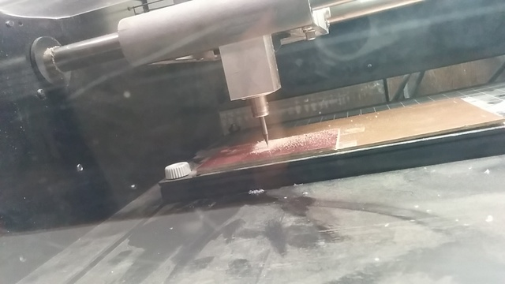
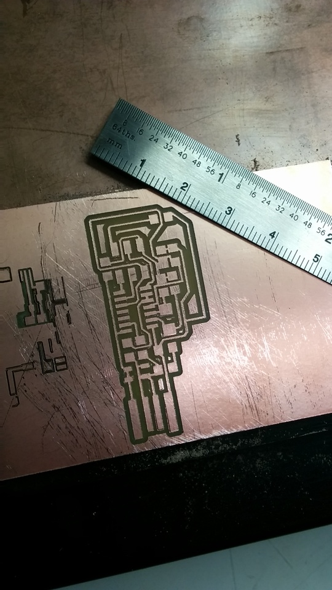
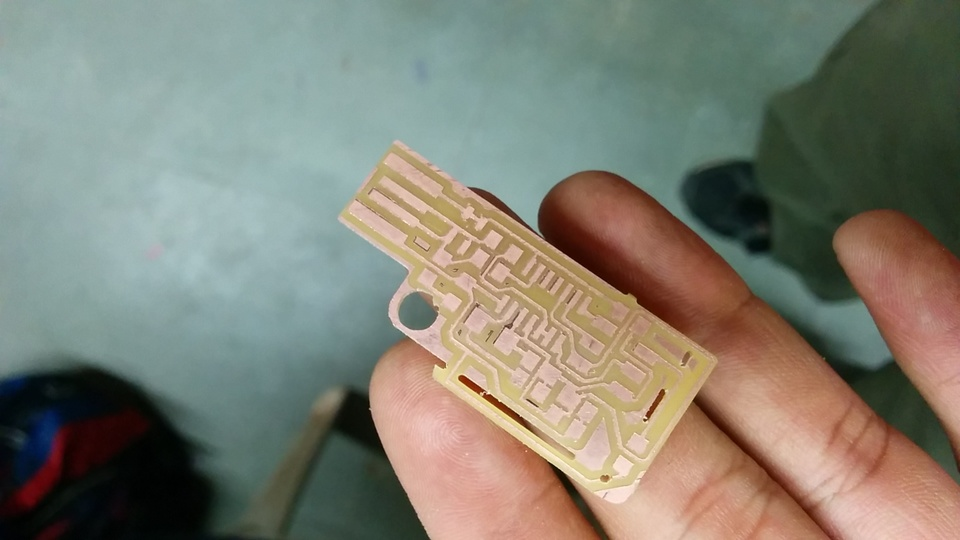
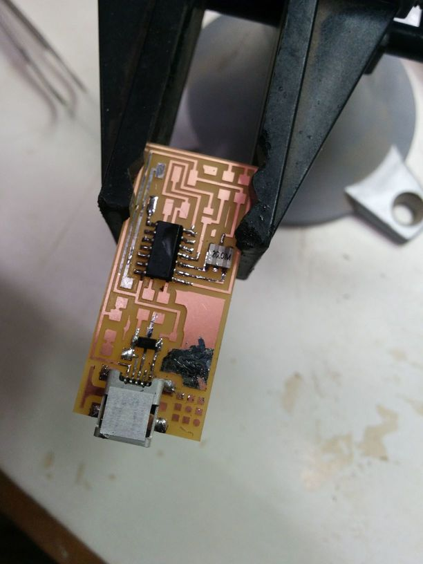
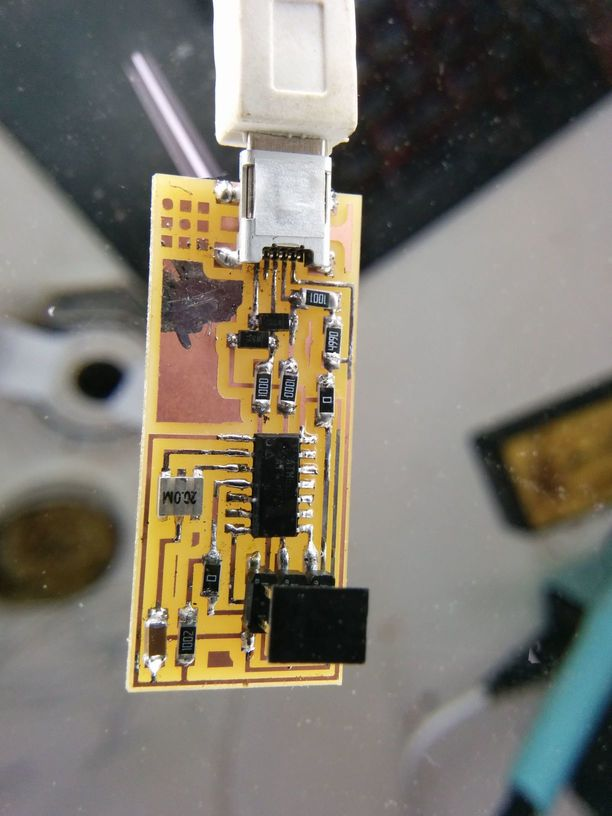
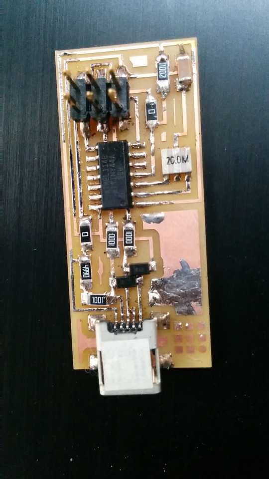
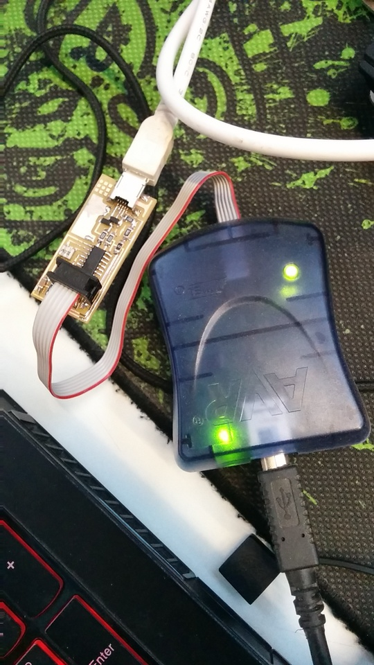

Electronics Production
Milling the PCB

The process of milling out the board is fairly simple, I had to upload the PNG to the interface, select RML as the output format, then PCB traces (1/64). (this setting allows for the bit to go down 0.1 mm , effectively taking away just the copper layer).
The first step is to mount the board upon the sacrificial layer using two-sided tape
Then the bit has to be inserted into the collet. To do this, we have to bring the machine into its 'View' mode. its a good idea to keep the bits cutting edge level with the steel square that rides the bearing shafts.
then we replace the plastic cover, and exit the view modeand the bit positiosn itself at the 0 of the machine. Then, depending on where the board is relative to the origin of the machine, we can send the bit to an x,y min locaton which acts as temporary origin for the job.
Once thats done, we have to manually set the Z axis' Zero by moving the bit down using the down key, opening the set screws (while keeping the plastic cover on) and dropping the bit so that it touches the board

then we can calculate the toolpath keeping the number of offsets as 4, and send it to the machine. the milling process takes about 15 to 20 minutes./p>


The next step is to load the outline cut into and through the board, change the tool to 1/32 inch, and to get a cutout of the circuit

the function of the break away parts is that once the isp is programmed, that piece can be broken off so it can be used. However, I noticed an issue with the cutout board that rendered my cut useless, so I downloaded another ISP , the standard one. However one difference from the tutorial board is that this one uses a resonator as opposed to the crystal with two capacitors

Stuffing the board
If the soldering of tiny tiny components onto tiny tiny PCBs with very basic knowledge of soldering has taugth me anything, it's that I hate soldering.
Here's the board after a few bloopers, you can see that I've dropped solder onto the large copper area while trying to solder the USB mini headers' ground pin, also i got a layer of solder onto the copper trail

Finally, I got all the components on without too many burns and/or other mishaps

however, it was still quite messy , and i wasnt sure if there were any shorts, so i plugged in the ISP and my PCB and surely enough, the red light started blinking, signalling that something was wrong.
So to correct this, I took a multimeter and in the 'connectivity' mode, I checked for shorts. to start with , I checked the USB header, and discovered that the ground and the VCC power pin were shorted, so i went back over all the joints, reflowed the solder, made it nice and shiny, (all the while grumbling about why a machine couldn't do this job for me) and tested it again, and it worked out


Honestly, I can't see any difference with my naked eyes, but something obviously cleared up, because it started working after.
Programming the ISP
So I recently installed an Xubuntu dual-boot on my system, and I have to say it makes things ridiculously easy . I just followed the instructions to the letter and I had an ISP of my own.